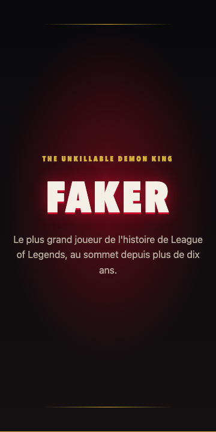
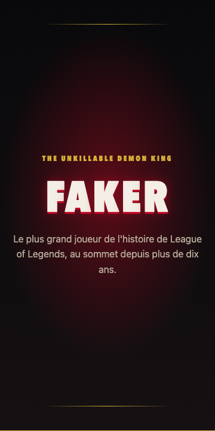

Le nom Faker animé dans l'En-tête
Le grand nom « Faker » en haut de page était figé. Il apparaît maintenant lettre par lettre, puis sa lueur rouge respire doucement.
Décision attendue
Merger la pull request. Le rendu avec un vrai lecteur d'écran et sur un vieux téléphone n'a pas été essayé : voir « Essayer ».
Risque
Faible
Avant / après
En-tête, 0,45 s après l'ouverture
Téléphone 360 px, nom affiché


Ce qui change
- À l'ouverture, les cinq lettres apparaissent l'une après l'autre ; le nom est complet en 1,2 seconde
- Ensuite, la lueur rouge autour du nom s'atténue puis revient, en boucle, toutes les 3,5 secondes
- Le nom ne bouge pas et ne change pas de taille : seules la transparence et la lueur varient
- Avec « réduire les animations », le nom s'affiche d'un coup, sans lueur qui pulse
- Un lecteur d'écran lit toujours « Faker » d'un seul mot
Fiabilité
Tests106 tests passent, dont 12 nouveaux sur le nom animé
ChecksPassés sur cette version (837be2f)
Critères5 sur 5 prouvés (voir l'annexe)
Tests existantsAucun supprimé ni modifié
RelectureRelu deux fois par des agents indépendants : un saut de la lueur au démarrage, corrigé avec un test, et quatre retouches.
RisqueAjout isolé dans l'En-tête : le texte du nom ne change pas, seule sa façon d'apparaître. Facile à annuler.
Choix effectués
Tout passe par la feuille de style, sans programme qui tourne dans la page : le nom reste visible même si le navigateur bloque les scripts. Pour les lecteurs d'écran, chaque lettre est cachée et le titre porte une étiquette « Faker », comme une plaque sur une porte. L'autre option, un mot caché en double, aurait fait lire « FakerFaker » à un test existant. La contrepartie : quelques lecteurs d'écran anciens gèrent mal ces étiquettes sur un titre. La lueur pulse en continu, même quand on a défilé plus bas ; si un vieux téléphone saccade, on pourra l'arrêter hors de l'écran.
Pour l'essayer
Ouvrez https://deploy-preview-14--faker-tribute.netlify.app : les lettres apparaissent, puis la lueur respire. Sur iPhone, VoiceOver doit dire « Faker » d'un mot.
Annexe
Les critères du ticket
Pour chaque critère d'acceptation, le test ou la capture qui le prouve.
| État | Critère |
|---|---|
| Prouvé | À l'ouverture de la page, les lettres de « Faker » apparaissent l'une après l'autre, et le nom est entièrement visible en 1,5 seconde au plus. Test : chaque lettre a un délai croissant et la dernière finit en 1,5 s au plus. Capture à 0,45 s : « FAKE » en cours d'apparition. |
| Prouvé | Une fois le nom affiché, sa lueur rouge varie doucement en continu, sans que le nom change de place ni de taille. Test : la pulsation est infinie, part de la lueur de base et n'anime ni taille ni position. |
| Prouvé | Avec le réglage système « réduire les animations », le nom s'affiche directement, en entier, sans apparition ni pulsation. Test : les animations n'existent que sans ce réglage, et aucune lettre n'est masquée par défaut. |
| Prouvé | Un lecteur d'écran annonce toujours « Faker » comme un seul mot, pas lettre par lettre. Test : le titre porte l'étiquette « Faker » et chaque lettre est cachée aux lecteurs d'écran. |
| Prouvé | À 360 px de large, le nom tient sur une ligne et rien ne déborde pendant l'animation. Capture à 360 px : le nom tient sur une ligne. Test : le nom ne passe jamais à la ligne. |
Les fichiers touchés
4 fichiers : 3 créés, 1 modifié.
| Statut | Fichier | Lignes |
|---|---|---|
| Créé | src/data/nom-anime.ts Calcule les lettres du nom et le délai de chacune | +25 −0 |
| Créé | tests/nom-anime-css.test.ts Vérifie que seules la transparence et la lueur bougent, et le réglage « réduire les animations » | +50 −0 |
| Créé | tests/nom-anime.test.ts Vérifie les délais, les lettres et l'étiquette pour lecteurs d'écran | +77 −0 |
| Modifié | src/components/EnTete.astro Découpe le nom en lettres et décrit l'apparition et la pulsation | +65 −1 |